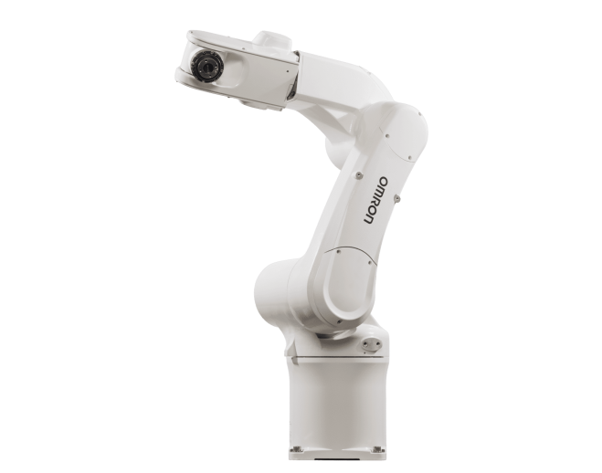

Robô Articulado

O robô articulado é um dos modelos mais utilizados na indústria moderna. Sua estrutura é formada por várias juntas (articulações), semelhantes às de um braço humano, permitindo realizar movimentos complexos com alta precisão e flexibilidade. Dependendo do modelo, pode possuir de quatro a sete eixos de movimentação.
Princípio de Funcionamento
O robô articulado funciona por meio de servomotores instalados em cada articulação. Esses motores são controlados por um sistema eletrônico que sincroniza os movimentos dos eixos, permitindo posicionar a ferramenta em diferentes ângulos e locais dentro da área de trabalho.
Características Técnicas
- Possui de 4 a 7 eixos de movimentação.
- Grande alcance e flexibilidade.
- Alta precisão e repetibilidade.
- Capacidade para movimentos complexos.
- Pode manipular cargas leves ou pesadas.
- Permite diversas configurações de ferramentas.
Aplicações Industriais
- Soldagem.
- Pintura industrial.
- Montagem de peças.
- Paletização.
- Manipulação de materiais.
- Usinagem e inspeção de qualidade.
Integração com Automação e IoT
Os robôs articulados podem ser integrados a CLPs, sensores industriais, sistemas supervisórios e plataformas de Internet das Coisas (IoT). Essa integração possibilita o monitoramento remoto, análise de desempenho, manutenção preditiva e maior eficiência dos processos produtivos.
Modelos Comerciais
| Fabricante | Modelo |
|---|---|
| ABB | IRB 6700 |
| FANUC | M-20iD |
| KUKA | KR 10 R1100 |
Imagens de Modelos Comerciais

IRB 6700
ABB

M-20iD
FANUC

KR 10 R1100
KUKA